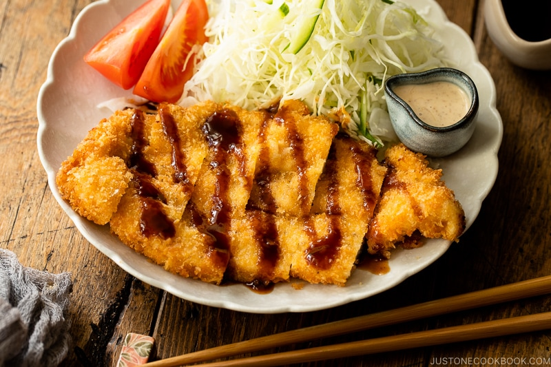

Chicken Katsu

Description
This is my family recipe for Chicken Katsu - Japanese style
fried chicken. Can also be used to make Tonkatsu, just use pork
cutlets instead of chicken. Serve with white rice and tonkatsu
sauce.
Ingredients
- 4 skinless, boneless chicken breast halves - pounded to 1/2 inch thickness
- salt and pepper to taste
- 2 tablespoons all-purpose flour
- 1 egg, beaten
- 1 cup panko bread crumbs
- 1 cup oil for frying, or as needed
Steps
- Season the chicken breasts on both sides with salt and pepper.
Place the flour, egg and panko crumbs into separate shallow dishes.
Coat the chicken breasts in flour, shaking off any excess. Dip them
into the egg, and then press into the panko crumbs until well coated
on both sides.
- Heat 1/4 inch of oil in a large skillet over medium-high heat.
Place chicken in the hot oil, and cook 3 or 4 minutes per side,
or until golden brown.